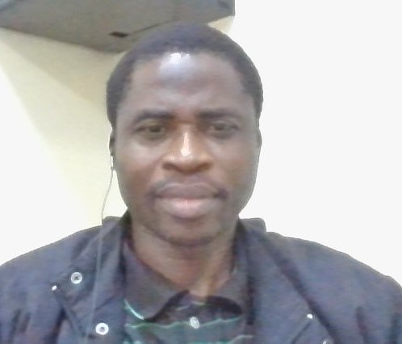

Adetola Ogunwale

Summary
I am very diligent Telecommunication Engineer with wide experience in Two-way Radio Infrastructure.
A good and upcoming web developer always given to learning new skills.
Education
- BSc in Electrical Electronics Engineering. Federal University, Oye-Ekiti (2024)
- HND, Electronic/Telecommunication Engineering. Federal Polytechnics, Offa, Kwara state (2002)
Work Experience